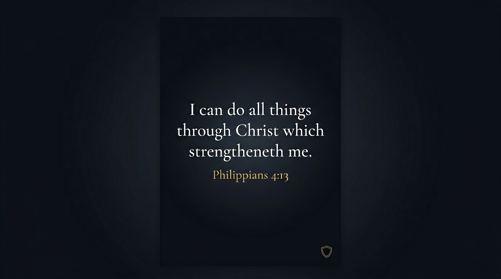
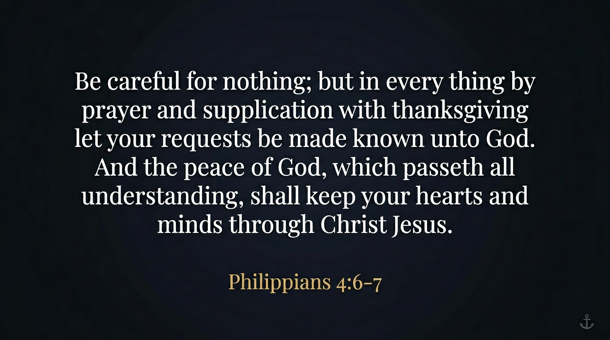
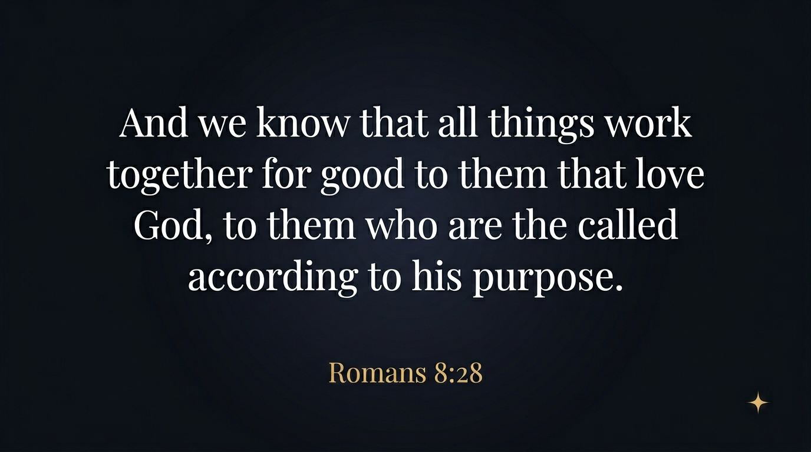
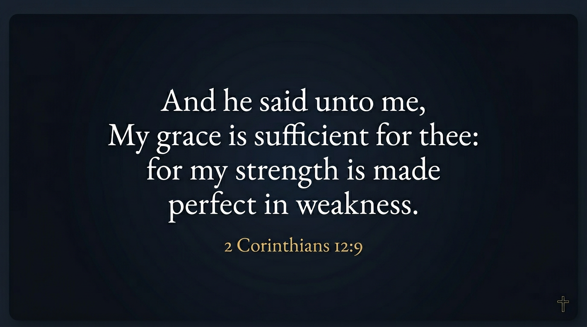

Pinterest-ready images on a dark field. Each file opens in a new tab so you can save or pin. Link pins to todaysdailybattle.com. See PINTEREST-README for alt text and hashtags.




Explore all pages · Home